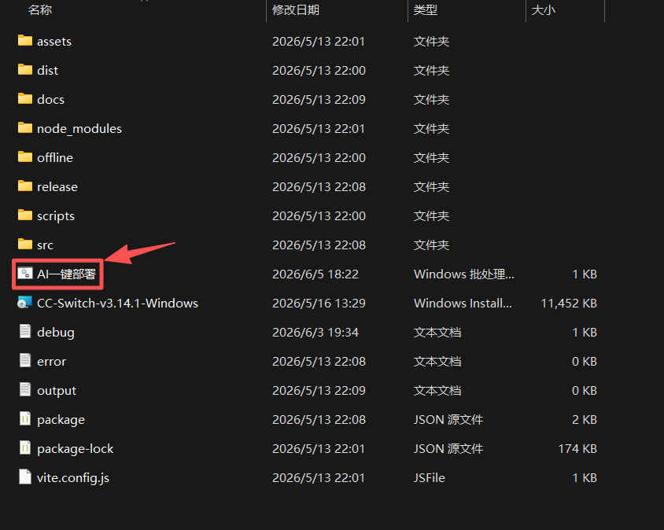
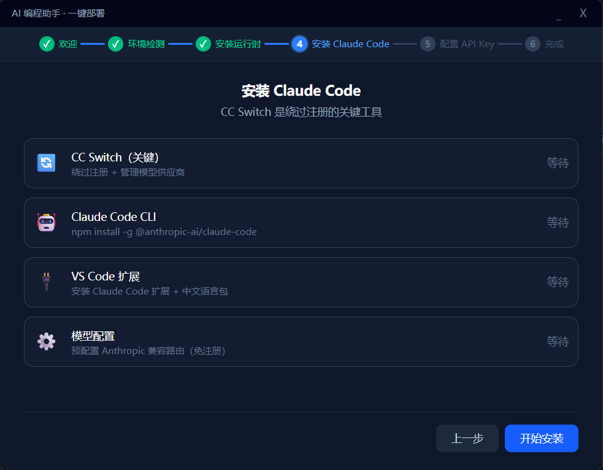
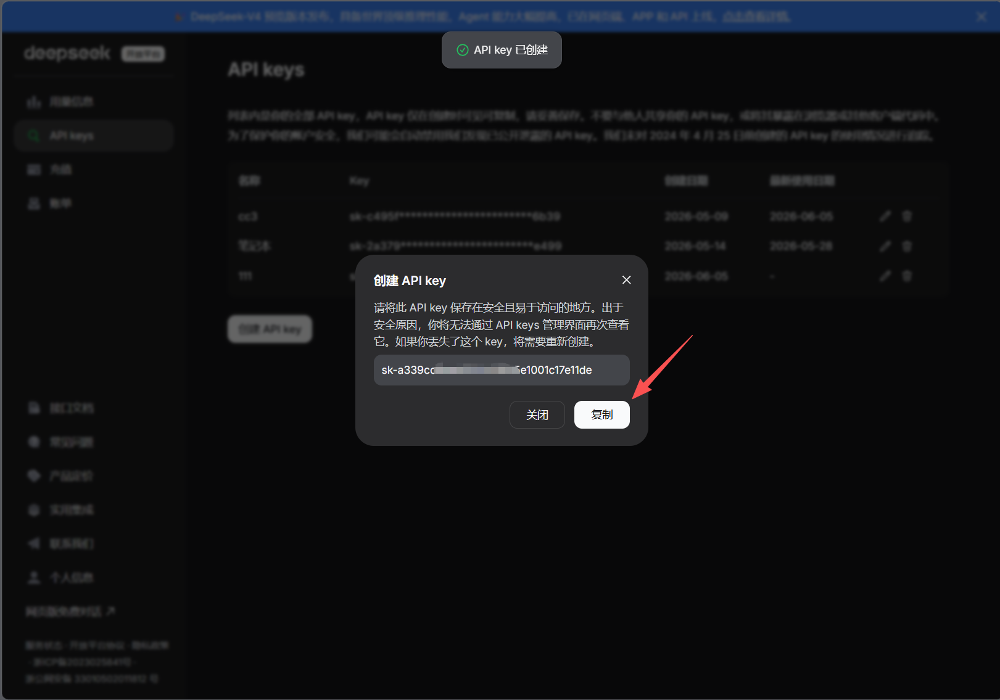
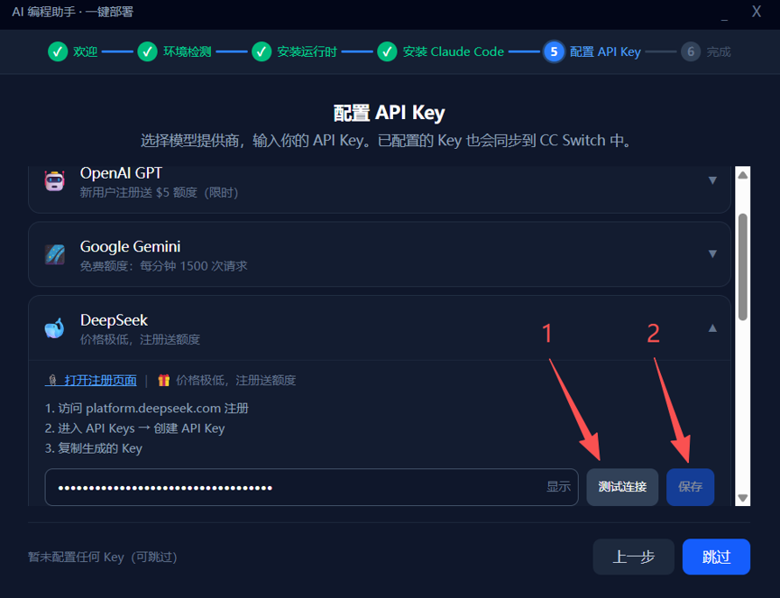
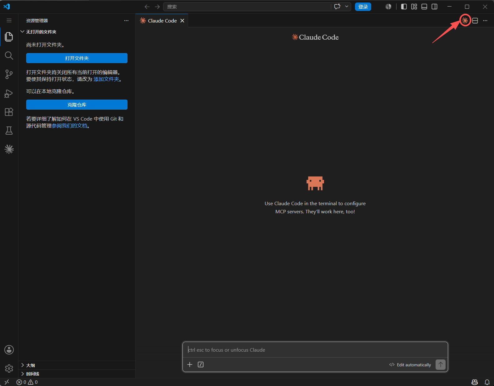
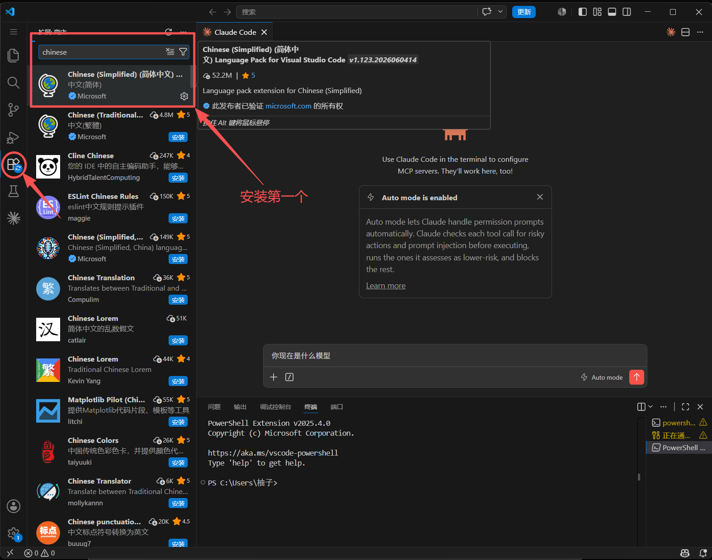
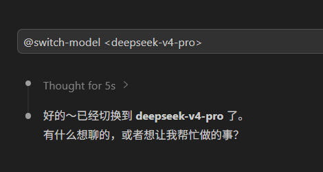

不用装环境、不用配变量、不用读文档。
跟着界面点几下，Git、Node.js、VS Code、Claude Code 全部就绪。
不只是装了一堆软件——而是一套互相配合好的 AI 编程环境。打开 VS Code 就能开始。
在终端里跟 AI 对话写代码，已配置好，打开即用
中文界面 + Claude 扩展，写代码和聊 AI 一个窗口搞定
在对话框输入指令就能换模型，DeepSeek 等主流模型预设就绪
开发必备工具一起装好，不用自己一个个下载
界面中文、模型预设，调的比你自己配的还顺手
换电脑？插上再来一遍，环境完全一样
每张截图都可以点击放大查看。照着点就行，不需要理解原理。





claude 就能跟 AI 对话写代码了

@switch-model <deepseek-v4-pro> 换模型大多数人教你装 AI 编程工具的方式：先看 3 篇文档、配 5 个环境变量、排 8 个报错。我们不想这样。
不需要先装任何东西。U 盘插上，点两下，完事。
核心组件都在 U 盘里，不依赖网络。网不好？没关系。
装了什么一清二楚。不想用了有卸载脚本，干干净净。
界面中文、指引中文、出错了提示也是中文。没有语言障碍。
U 盘随身带。换台电脑，插上再来一遍，5 分钟环境一模一样。
装了 cc-connect 的话，微信上就能跟 Claude 对话。不在电脑前也不耽误。
API Key 就是你的「AI 使用凭证」——类似于地铁卡，刷一下证明是你、该用你的账户。
不一定要花很多钱。DeepSeek 新用户注册送免费额度，正常写代码一个月花不了几块钱。去 platform.deepseek.com 注册就能拿到。具体操作见上面第 4 步的截图。
这个安装器就是为你做的。
你唯一需要做的事情：插 U 盘 → 双击 → 点「下一步」→ 填 Key → 完成。每一步界面上都写得清清楚楚，照着截图点就行。
唯一需要你自己动手的环节是申请 API Key——因为那是你的私人账号，我们没法替你注册。
U 盘插到新电脑上，再跑一次安装器——5 分钟，环境完全一样。
所有安装包都在 U 盘里，不用重新下载。API Key 需要重新填一次（出于安全，Key 不会跟着 U 盘走）。
大部分问题安装器自己能处理：网络断了会换备用方案、装过的会自动跳过、权限不够会提醒你。
实在不行，U 盘里有卸载脚本，清干净重来一遍就好——反正也就 5 分钟的事。
当然可以。安装器里列出了多个模型提供商（OpenAI、Google Gemini 等），选你想要的就行。
装完之后想换模型，在 Claude Code 对话框里输入 @switch-model <模型名> 就能切换。具体见上面第 5 步的截图。
插上 U 盘，5 分钟后你就在用 AI 写代码了。
不需要教程，不需要配置，不需要折腾。